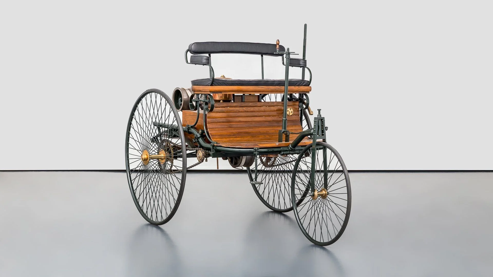

De la 3 roți la 1.800 CP
O călătorie prin timp, cafea și benzină

1886 · TRECUTUL
Mercedes-Benz Patent-Motorwagen
Prima mașină din lume · 3 roți · 0.75 CP
Karl Benz a primit patentul DRP 37435 pe 29 ianuarie 1886. Vehiculul avea trei roți, un motor cu ardere internă cu un singur cilindru și o viteză maximă de 16 km/h. A fost prima dată când un vehicul autopropulsat a fost construit special pentru a fi condus pe drumuri publice.
Citat Gottlieb Daimler: „The best or nothing.”
Citat Gottlieb Daimler: „The best or nothing.”

2020+ · VIITORUL
Bugatti Bolide
Hypercar extrem · 1.850 CP · 500+ km/h
Bugatti Bolide este un track-only hypercar cu motor W16 de 8.0 litri, patru turbine și o putere de 1.850 CP. Raportul putere/greutate atinge 0.67 CP/kg, iar designul aerodinamic este inspirat din lumea cursei. Accelerează 0-100 km/h în doar 2.1 secunde.
Citat Horacio Pagani: „Art and science can walk together, hand in hand.”
Citat Horacio Pagani: „Art and science can walk together, hand in hand.”
„Automobilul nu este doar o mașină. Este o poveste despre curaj, inovație și viteză. De la trei roți la monștri de 1.800 CP — fiecare generație și-a scris propria legendă.”
— Arhivele automobilelor